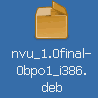
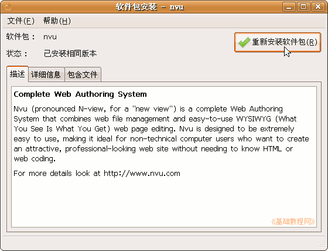
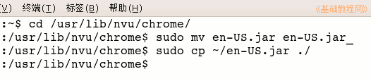

Nvu 操作基础教程
作者：Teliute 来源：基础教程网
安装和设置简体中文 返回目录 下一课Nvu是一个免费的网站制作软件，可以在linux和windows平台上运行，我们以Ubuntu为例来学习它的安装方法，下面我们来看一个练习；
1、下载软件包
1）官方下载：http://nvudev.com/点，进入后在左侧可以找到繁体中文版，按提示下载；
2）debian下载：http://backports.org/debian/pool/main/n/nvu/nvu_1.0final-0bpo1_i386.deb
3）Mozilla Taiwan下载：http://www.moztw.org/dls/nvu/nvu-1.0-linux2.6.10-gnu-zhTW.tar.bz2
2、安装Nvu
1）下载后得到一个deb安装包，如果是压缩包，先解压出安装包；

2）双击这个安装包，出来一个安装窗口，稍等检查完后，点右上角的绿色勾“安装软件包”；

3）点“包含文件”标签，可以找到程序安装到“usr/lib/nvu/”文件夹中；
3、设置简体中文包
1）下载简体中文包，在Ubuntu中文论坛里有一个，可以下载20楼的：http://forum.ubuntu.org.cn/viewtopic.php?t=21411&postdays=0&postorder=asc&start=15
本站常用教具中也有下载：http://teliute.org/jiaoju/index.htm
2）下载的时候保存到自己的主文件夹目录里，是一个en-US.jar文件，等会复制的时候要用；
3）由于安装的文件夹，需要管理员权限，因此需要到终端里执行复制命令；
4）点左上角的菜单“应用程序－附件－终端”，进入命令行窗口，
输入命令，输完后按一下回车键： cd /usr/lib/nvu/chrome/
输入命令： sudo mv en-US.jar en-US.jar_
然后按一下回车键，如果提示输入密码，输完后也按一下回车键(无显示)，这一步是把原来的en-US.jar改个名字；
输入命令： sudo cp ~/en-US.jar ./
这一步是把下载的文件复制过来，这样启动以后就是简体中文界面了，里面的~就是自己的主文件夹；

注意 $ 后面的是要输入的命令，每个单词后面有一个空格，例如 cd 后面有个空格，sudo后面也有空格；
本节学习了Nvu的安装和设置简体中文的基本方法，如果你成功地完成了练习，请继续学习下一课内容；
本教程由86团学校TeliuTe制作|著作权所有
基础教程网：http://teliute.org/
美丽的校园……
转载和引用本站内容，请保留版权信息和本站链接。